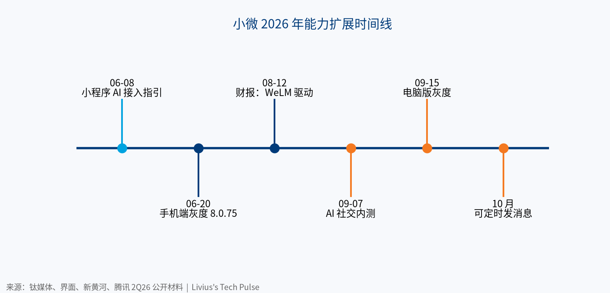
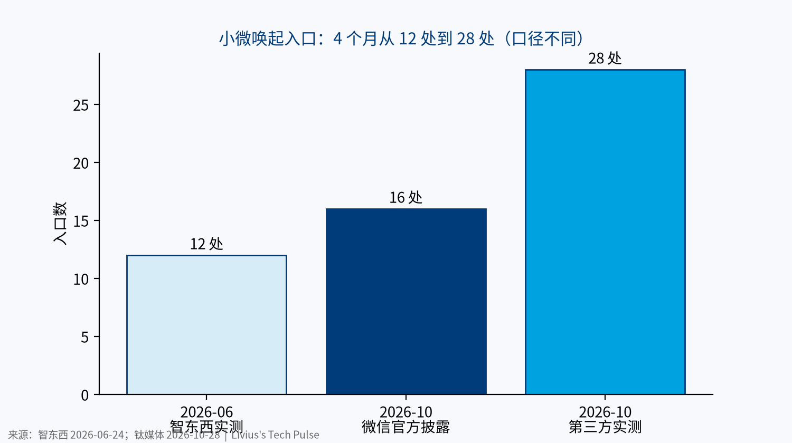

小微不是一个新 App。它是长在微信里的一层 Agent：在聊天、内容、文档和小程序里随叫随到，替你找信息、做准备，最后一步留给你。截至 2026 年 10 月 28 日，它仍在灰度，官方没有公布用户数。
一、核心判断
| # | 判断 | 来源 | 类型 | 置信度 |
|---|---|---|---|---|
| 1 | 腾讯官方定位：微信内的 agentic AI，由定制模型 WeLM 驱动 | 微信官方 LinkedIn（2Q26） | 一手 | 高 |
| 2 | 条款允许小微自主调用技能和接口，高风险操作必须本人完成 | 小微使用条款 | 一手 | 高 |
| 3 | 授权边界在放宽：10 月已可定时发消息 | 钛媒体，10-28 | 二手 | 中 |
| 4 | 瓶颈在小程序改造供给，不在模型 | 钛媒体（中科网转载），10-28 | 二手 | 中 |
| 5 | 长期目标是 Agent 之间交易，眼下坚持多步确认 | 新黄河，9-15 | 二手 | 中 |
二、时间线
| 日期 | 事件 | 来源 |
|---|---|---|
| 2026-06-08 | 发布《关于开发者接入微信 AI 生态的指引》 | 钛媒体 |
| 2026-06-20 | 手机端小范围灰度，需微信 8.0.75 | 界面新闻 |
| 2026-06-22 | 腾讯声明小微在微信小范围测试 | CNBC |
| 2026-08-12 | 2Q26 财报：小微由 WeLM 驱动 | 微信官方 LinkedIn |
| 2026-09-07 | 内测“小微 AI 社交” | 界面新闻 |
| 2026-09-15 | 电脑版灰度 | 新黄河 |
| 2026-10 | 可定时发消息，仍未全量 | 钛媒体 |

三、入口：几乎铺满微信
| 入口 | 能否读当前聊天 | 来源 |
|---|---|---|
| 首页左上角绿色“眼睛” | 否 | 智东西 |
| 主界面右滑展开的侧屏 | 否 | 界面新闻 |
| 单聊、群聊右下角“+” | 是 | 智东西 |
| 长按聊天消息 | 是 | 智东西 |
| 公众号文章分享 | 否 | 智东西 |
| 视频号分享 | 否 | 智东西 |
| 文档分享（图片、PDF、Office） | 否 | 智东西 |
| 电脑版左上主入口 | 否 | 新黄河 |

入口数量的口径不一：6 月智东西实测 12 处，10 月微信官方披露 16 处，第三方实测 28 处（后两项均为钛媒体转述，二手）。首页主入口至今仍在灰度。
四、能力：能做什么，停在哪一步
| 能力 | 现状 | 边界 | 来源 | 置信度 |
|---|---|---|---|---|
| 朋友圈摘要 | 总结好友动态 | 仅近两天 | 36氪 | 高 |
| 公众号文章 | 搜索、总结、围绕文章提问 | — | 智东西 | 高 |
| 导航、打车等小程序服务 | 调起小程序 | 付款需手动确认 | 智东西 | 高 |
| 发红包 | 生成红包确认信息 | 最后一步跳红包页由用户发送 | 智东西 | 高 |
| 修改设置：语言、深色模式、好友验证 | 可直接修改 | — | 智东西 | 高 |
| 修改设置：关怀模式、青少年模式、字体 | 不能直改 | 跳转到对应页面 | 智东西 | 高 |
| 读单聊、群聊上下文 | 会话内唤起时读取 | 首页入口读不到 | 智东西 | 高 |
| 查看待办 | 支持 | — | 智东西 | 中 |
| 小工具生成 | 一句话生成，可加入“我的小程序” | 只能自己用，不能分享 | 极客公园 | 高 |
| 定时发消息 | 10 月可用 | 消息下标注“通过小微定时发送” | 钛媒体 | 中 |
| 支付、转账 | 可发起 | 必须手动输入支付密码 | 36氪 | 高 |
小微的共同特点是“帮你找到、帮你准备、让你确认”。6 月 36氪实测时，它还不能定时发消息，也不能代发朋友圈。到 10 月，它已能定时发送，并能准备好朋友圈内容、跳转后由用户确认。
五、条款与隐私
官方条款写得比媒体报道更直接（使用条款，一手）：
- 小微可以“申请权限、调用技能或接口”自主执行任务。
- 用户的指令视为对自主执行的有效授权，后果由用户承担。
- 删除聊天记录、人脸识别、输入验证码或密码、特定小程序，不支持代办。
- 权限不超出用户本人能访问的范围。仅限个人使用，不得商用。
微信员工 9 月回应称，只有在聊天中主动“问小微”时才从本地临时读取，分析后不保存；记忆功能可在“记忆与隐私”中关闭（界面新闻，二手，置信度：中）。
六、模型：WeLM 而不是混元
| 项目 | 值 | 来源 | 置信度 |
|---|---|---|---|
| 线上模型 | WeLM-80B | 新黄河 | 中 |
| 总参数 | 800 亿 | 新黄河 | 中 |
| 激活参数 | 约 30 亿 | 新黄河 | 中 |
| 在研模型 | WeLM-617B（激活 230 亿） | 新黄河 | 中 |
| 上下文 | 128K tokens | 界面新闻 | 中 |
| 外部兜底 | DeepSeek | 36氪 | 高 |
小模型、低激活参数，是为了把十亿级调用的成本和时延压下来。小微归微信事业群，与集团混元团队相互独立（钛媒体，二手）。
七、生态：小程序要被拆成“零件”
微信要求开发者把小程序拆成原子接口和原子组件，再写一份叫 SKILL 的说明书。开发模式需通过评测才可被调用；不接入的小程序“将无法被微信 AI 推荐及调用”。首批内测企业包括京东、美团、滴滴、携程、同程、得物、肯德基；携程称 4 月中旬已接入（钛媒体，二手，置信度：中）。
支付侧，微信支付 6 月推出 AI 专属卡，把 Agent 消费额度与主账户隔离（钛媒体，二手）。
八、竞争格局
| 对手 | 形态 | 要点 | 来源 | 置信度 |
|---|---|---|---|---|
| 豆包手机助手 | 系统级跨 App 操作 | 2025-12 操作微信触发风控，随后下线该能力 | 澎湃新闻 | 高 |
| 阿里千问 | 独立 App + 开放 Agent | 6 月宣布向第三方 Agent 和 Skill 开放 | 钛媒体 | 中 |
| Apple Intelligence（中国） | 系统级，阿里千问供模型 | 12 月随 iOS 27.3 上线，不含新版 Siri | MacRumors | 中 |
| Gemini Intelligence | Android 系统级 Agent | 跨 App 完成多步任务 | 高 | |
| Gemini in Google Messages | 消息 App 内对话 | 覆盖 165+ 国家 | Google 帮助 | 高 |
| Meta AI（WhatsApp） | 消息 App 内助手 | 2025-05 后未更新用户数 | Economic Times | 中 |
差别在于：豆包和 Gemini 从系统层操作别人的 App；Meta AI 和 Gemini in Messages 停在消息里对话；小微是少有同时握有社交关系、支付和小程序履约的 App 内 Agent。
九、数据缺口
| 指标 | 数值 | 来源 | 置信度 |
|---|---|---|---|
| 微信及 WeChat 合并月活 | 14.39 亿 | 腾讯 2Q26 财报 | 高 |
| 小微日活 | 无公开数据 | — | — |
| 小微月活 | 无公开数据 | — | — |
| 调用量 | 无公开数据 | — | — |
| 全量时间 | 无公开数据 | — | — |
有券商跟踪称灰度比例约 10%、覆盖约 1 亿用户（一财有看投，二手，置信度：低），腾讯未证实。
十、风险与观察信号
风险：条款把误操作后果归给用户；对外部 Agent 封闭、对内自营的公平性争议；超过三步的复合任务完成度下滑；小程序调用排序规则未公开。
观察信号：
- 腾讯 3Q26 业绩（11 月 18 日）是否首次披露小微数据。
- 全量推送时间。
- 小程序开发模式提审开放后的接入比例。
- AI 专属卡是否接入小微。
- 小工具能否分享和支付。
结论
- 小微的价值不在模型多强，而在微信手里的上下文和小程序履约。
- 腾讯选择慢：每一步交给用户确认，边界逐月放宽。
- 成败取决于数百万小程序愿不愿意把业务拆给 AI。
口径说明：数据截至 2026-10-28。标注“二手”的内容转引自媒体或券商报道。小微用户数、日活、调用量均无公开数据，本文不做估算。本文不构成任何投资建议。